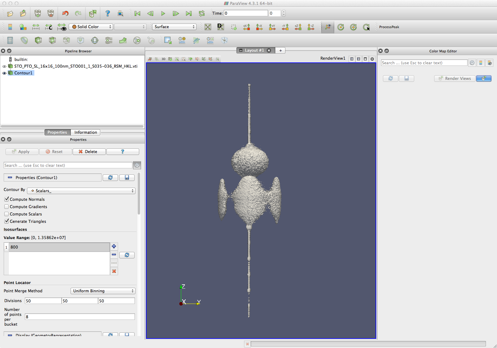

View 3D volume data files in ParaView¶
ParaView is an opensource project for viewing large volume datasets. Paraview can load the vti files created by rsMap3D, directly enabling users to quickly view their data and perform a number of operations on the data such as slicing, contours, etc.
ParaView is available for all major operating systems for free:
Tutorials and intro guides to ParaView are also available through that website.
In the following, we will describe a few basic steps to work with some typical volume data set created by rsMap3D.
General Notes¶
Since ParaView is written with large data sets in mind, a few precautions have been taken to avoid unnecessary and expensive calculations. As a rule of thumb, most actions in ParaView will need to be configured first (for example, setting the origin and normal direction for a slice through the data set), and then applied to the data by hitting the Apply push button in the Properties tab. There is an option in the general ParaView Preferences to enable Auto Apply, but this should be used with caution!
You can get quick help on almost any icon or property in the GUI by hovering the mouse cursor over it for a little while, which should display the corresponding tool tip.
We used ParaView version 4.3.1 for this tutorial. Historically, the ParaView interface has undergone changes from version to version, so not all of the features will be available for all versions, and the graphical representation might differ for new releases.
Loading the .vti data set¶
The VTI file created by rsMap3D can be loaded into ParaView using the File -> Open menu option. Note that if no file name was specified in the processing phase, a file should have been created in the current directory when the program was run. When the file is first opened, you will see a dataset ready to be loaded in the ParaView Pipeline Browser on the left (show in bold script). At this point, no data is shown yet:
In the Properties panel below the pipeline browser you can click Apply to initiate the actual loading of the data set (this step causes the actual data file to be read into memory). Once the data is loaded and active, more options will appear in the Properties tab and a box will appear in the center pane.
Note that in Properties pane the Representation is set to “Outline”. This option is responsible for the box shown in the central window. We are seeing a box representing the bounds of the data volume.
The Representation property has many options: Outline, Points, Surface, Volume, etc. For now we will select Volume. (Caution, this is a very computationally intensive process for large data files! You may be better off exploring your data set with isocontours in that case) At first look there may not seem to be much change but if you look closely you may see a few data points and should also see a Color Map Editor on the right.
In this case, the reason there is little showing is that the intensity covers many orders of magnitude. To play with the contrast, go to the Color Map Editor in the right pane, and change the contrast by using the Rescale to Custom Range button next to the colormap. You can also choose a different colormap through the Choose preset button . After rescaling the data range and changing the color map to “Rainbow desaturated”, our data set now looks as follows:
Scaling Intensities¶
There are essentially two ways to re-scale the intensities in the volume files:
- The easy option is to check the checkbox Use log scale when mapping data to colors in the colormap editor (in the right pane). You may now need to play with the data range again to make relevant features visible.
- Another more flexible and powerful way is to apply a Calculator filter to the data set and to rescale the intensity values using any custom configurable transform function. See the Section Calculator below.
Applying Filters to Data Sets¶
Now that we are sure that the data has been loaded into ParaView, we can apply a number of analysis tools to it. ParaView calls these tools Filters. These are accessible either through the Filters option in the menu bar, or through a number of icons just above the Pipeline Browser and Layout panes.
ParaView relies heavily on the concept of pipelines, meaning that data can be processed in a series of discrete steps. This structure is represented in the Pipeline Browser panel as an object tree. The general idea is that one needs to select an object in the object tree, and can then apply the next kind of filter to this object, thereby creating a child object of the selected parent. Each object can be made visible or turned off in the Layout pane by clicking the little eye symbol to its left.
Here are a few commonly useful filters for the kind of data sets that rsMap3D delivers. We will directly illustrate their use by applying them to our test data set.
Contour¶
This draws one or more isocontour surfaces from the data set (or whatever parent object it is applied to). The opacity and coloring of the contour can be adjusted in the Properties pane below the Pipeline Browser.
And the same thing with two isocontour surfaces that are colored according to their contour level values:
Calculator¶
This filter can be used to perform any custom calculation on the data set (more accurately, the available data arrays of the parent object). We will illustrate its use here to apply a logarithmic intensity scaling to our volume data set. Select the data set object in the Pipeline Browser and click on the calculator icon , or go through the menu via Filters -> Common -> Calculator.
In the Properties pane below the pipeline browser, you should now see the following properties:
We’ve already entered the equation into the corresponding text field (which was initially empty). The available data arrays for the calculations can be retrieved from the two dropdown menus below the mathematical symbols, one for scalar type data, the other one for vector type data. In this case, we’ve pulled up the intensity data from the original data set, which is stored in the array named “Scalars_”. (Note that you can see the available data arrays of the data set by selecting it and inspecting the Information tab below the pipeline browser.)
The scaling equation we’ve entered is
log10(Scalars_)
The calculator produces a new array with the result of this calculation, which will be named “Result”, according to the Result Array Name field. You can change this name to anything you like.
After hitting Apply for the calculator, inspection of the Information pane of the calculator shows that it now carries two array data sets: the original “Scalars_” and the new “Result”:
Now we are ready to perform some more interesting analysis using the scaled data set.
Slice¶
This filter draws a 2-dimensional slice through a 3D data set. Let’s see what an HL-plane cut through our data set looks like. The center of our intensity feature is located at (HKL) = (002). The HL-plane (for a cubic HKL lattice) has a normal direction along the K-axis, i.e.: (010). After selecting the Calculator1 object, we hit the slice icon, and enter the following parameters in the properties tab:
The Layout pane shows the orientation of the slice in our data set interactively while we edit these numbers:
After hitting Apply, we then get the following intensity map (after reorienting the 3-D view to look straight along the K-direction):
Note that the coloring of the slice is set to “Result”, which were the logarithmic intensity values we calculated above. You can edit the color map for the “Result” array through the Edit button shown here:
Line Profile¶
This filter generates line profiles through the 3D (or 2D) data set. Let’s find out what the intensity profile along the L-direction through the center of our feature looks like. Again, we select the Calculator1 object and apply the Plot Over Line filter to it. In the properties pane, we’ll define the end points according to our needs (apparently, the data is very slightly misaligne and we need to fudge the zero-point along the X-axis a little bit), and set the Resolution to 400 points along the line segment:
Here is the preview of what where the line profile will be drawn:
After hitting Apply, a new chart with the line profile appears in the ParaView window. It shows the line profile for both the linear intensity array “Scalars_”, and the logarithmic array “Result”. These lines can be modified in the properties pane:
And the result looks like this:
Adding coordinate axes to the plot¶
It is possible to add axes to the plot as well. Each object can have its own set of axes. Go to the Properties tab, and somewhere near the bottom you should see the following (or something similar):
Enable the checkbox and hit Edit to change the axes properties:
After making the desired adjustments, your data window will now look something like this:
Exporting data from Slices, Lines, etc.¶
After carefully selecting the right planes in ParaView, some of which may be oblique with respect to your cartesian coordinate grid, you may want to plot or process this data using a different software package. It is possible to export the data associated with many of the ParaView filter objects as a comma separated values (.csv) file. Select the corresponding object in the Pipeline Browser and click on the Save Data button or go through the menu File -> Save Data. Chose a filename and save the file. This works well for slices and line cuts alike. Careful, though, with 3D data objects, as the .csv files are stored in plain ASCII and can become very large for large data sets!
For our tutorial, we will save the data from Slice1 into a .csv file called “slice_data.csv”.
Plotting slice data in other programs¶
The slice data exported in .csv format can now be processed with external software. Below are two examples for Matlab and Python’s matplotlib. The challenging part is to convert the data given for each slice point back to something that the software can actually display. Usually this involves a triangulation step, as shown in the examples below.
Matlab¶
% five data columns: Intensity, log(Intensity), H, K, L
M = csvread('slice_data.csv',1);
% Delaunay triangulation to determine the data set connectivity
dt = delaunay(M(:,3), M(:,5));
vertices = [M(:,3), M(:,5)];
% plot the resulting patch data from the Delaunay triangulation
patch('Faces', dt, 'Vertices', vertices, 'FaceVertexCData', M(:,2), ...
'FaceColor','interp','EdgeColor', 'none')
xlabel('H')
ylabel('L')
axis('tight')
This should result in the following plot:

Python matplotlib¶
import numpy as np
import matplotlib.tri
import matplotlib.pyplot as plt
# load the data set with five columns: Intensity, log(Intensity), H, K, L
data = np.loadtxt('slice_data.csv', skiprows=1, delimiter=',')
# Delaunay triangulation to determine the data set connectivity
triang = matplotlib.tri.Triangulation(data[:,2], data[:,4])
# plot the slice
plt.tripcolor(triang, data[:,1], shading='gouraud', edgecolors='none',
cmap=plt.cm.jet)
plt.xlabel('H')
plt.ylabel('K')
plt.axis('tight')
plt.show()
The plot looks something like this in the end: